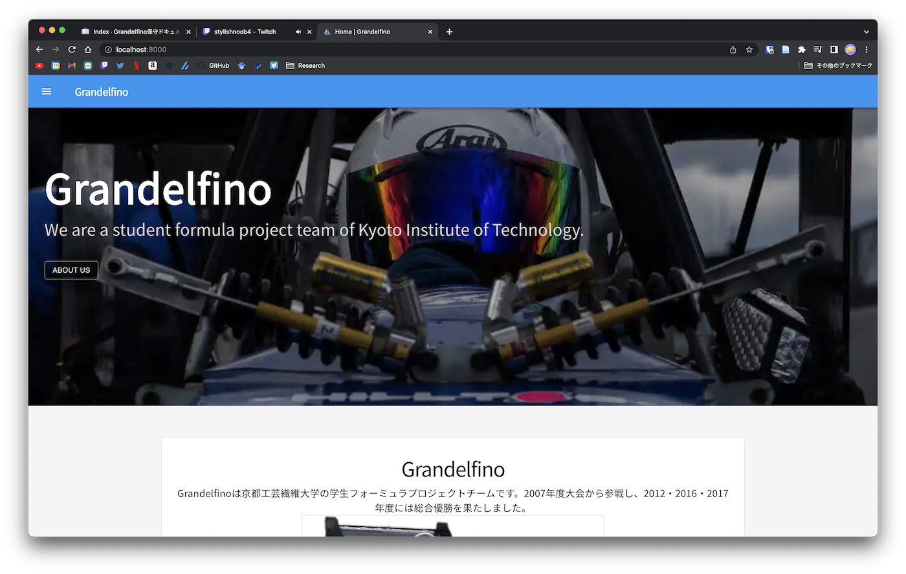
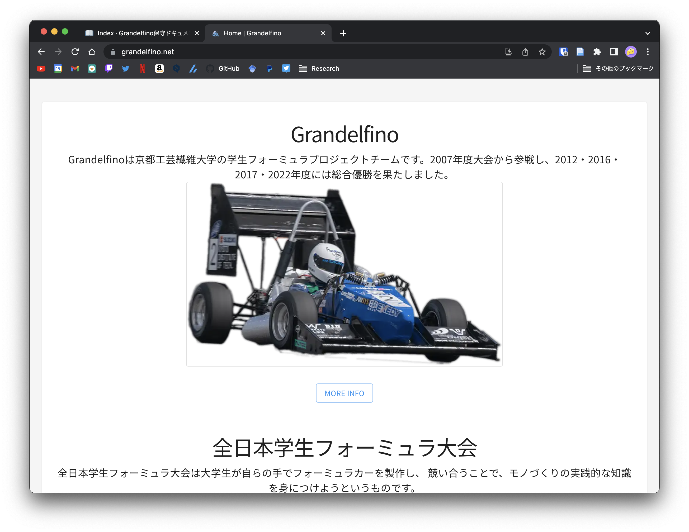

grandelfino.net/
ホームページの最初の画面
画面に表示されるテキストは<Typography>で囲ってあります
<Typograhpy>
Some text
</Typograhpy>
例えば，2022年度優勝の文言を入れたい場合， 
src/pages/index.jsにある該当する文書を探して

<Typography variant="body1" fontSize="1.2rem">
- Grandelfinoは京都工芸繊維大学の学生フォーミュラプロジェクトチームです。2007年度大会から参戦し、2012・2016・2017年度には総合優勝を果たしました。
+ Grandelfinoは京都工芸繊維大学の学生フォーミュラプロジェクトチームです。2007年度大会から参戦し、2012・2016・2017・2022年度には総合優勝を果たしました。
</Typography>

画像の差し替え
画像は
<StaticImage src="../images/path/to/image.png" alt="image_name"/>
で指定する．画像フォルダはsrc/images/*に入れているので，imagesフォルダ内に適宜画像を入れて，その画像のパスを指定する．
パスの指定は src="../images/画像があるファイルのパス"で指定する．
例えば，マシンの画像を新しくしたい場合，新しい画像をsrc/images/index/index_2.pngを置き換える
...
<Typography variant="h1">Grandelfino</Typography>
<Typography variant="body1" fontSize="1.2rem">
Grandelfinoは京都工芸繊維大学の学生フォーミュラプロジェクトチームです。2007年度大会から参戦し、2012・2016・2017・2022年度には総合優勝を果たしました。
</Typography>
<Card variant="outlined" sx={{ maxWidth: 600 }}>
<CardMedia>
// ../images/index/index_2.pngを置き換える．画像の名前が異なる場合は適宜それに合わせる
<StaticImage src="../images/index/index_2.png" alt="Top page" />
</CardMedia>
</Card>
...
